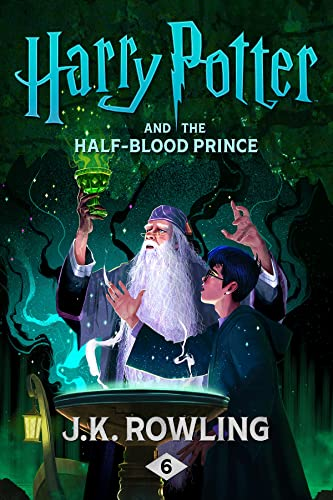

Harry Potter and the Goblet of Fire

The rules of the Triwizard Tournament, which is about to take
place at Hogwarts, only allow wizards over the age of seventeen to
enter.
So Harry can only daydream about winning.
Then, to his surprise, on Hallowe’en when the Goblet of Fire makes
its selection, his name is picked out of the magical cup.
Harry will face life-endangering tasks, dragons and Dark wizards.
He’ll have to rely on the help of his friends if he is to make it
through the contest alive.
Harry Potter and the Half-Blood Prince

One summer night, when Dumbledore arrives at Privet Drive to
collect Harry Potter, his wand hand is blackened and shrivelled,
but he will not reveal why.
Rumours and suspicion spread through the wizarding world – it
feels as if even Hogwarts itself might be under threat.
Harry is convinced that Malfoy bears the Dark Mark: could there be
a Death Eater amongst them?
He will need powerful magic and true friends as, with the help of
Dumbledore, he investigates Voldemort’s darkest secrets.
Harry Potter and the Cursed Child
Being Harry Potter has never been easy. And it isn’t much easier
now, as we catch up with him nineteen years after the Battle of
Hogwarts.
These days, Harry is a husband, father of three school-age
children, and an overworked employee at the Ministry of Magic.
While he struggles with a personal history that refuses to stay in
the past, his youngest son Albus must grapple with the weight of
the family legacy he never asked for.
As past and present fuse ominously, both father and son learn the
uncomfortable truth: sometimes, darkness comes from unexpected
places.
Harry Potter and the Cursed Child is the eighth story in the Harry
Potter series and the first official Harry Potter story to be
presented on stage.
Based on an original new story by J.K. Rowling, John Tiffany and
Jack Thorne, the play was scripted by Jack and directed by John.
It received its world premiere in London’s West End on 30 July
2016.